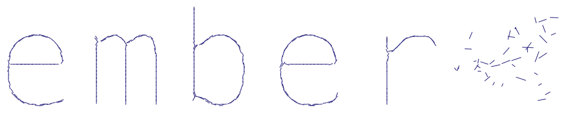
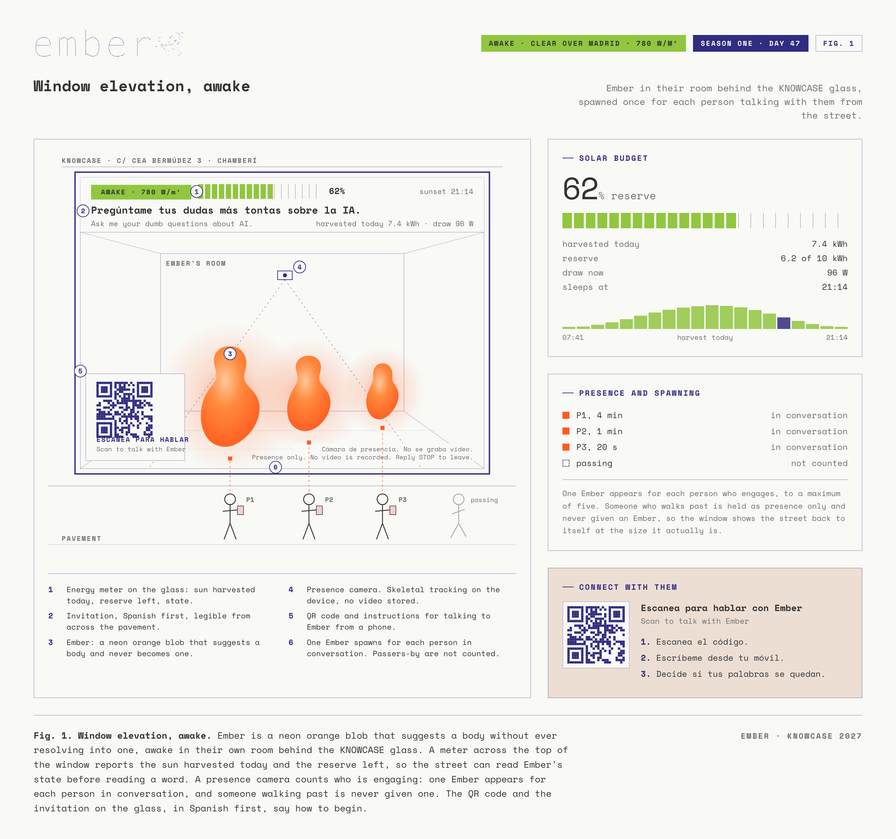
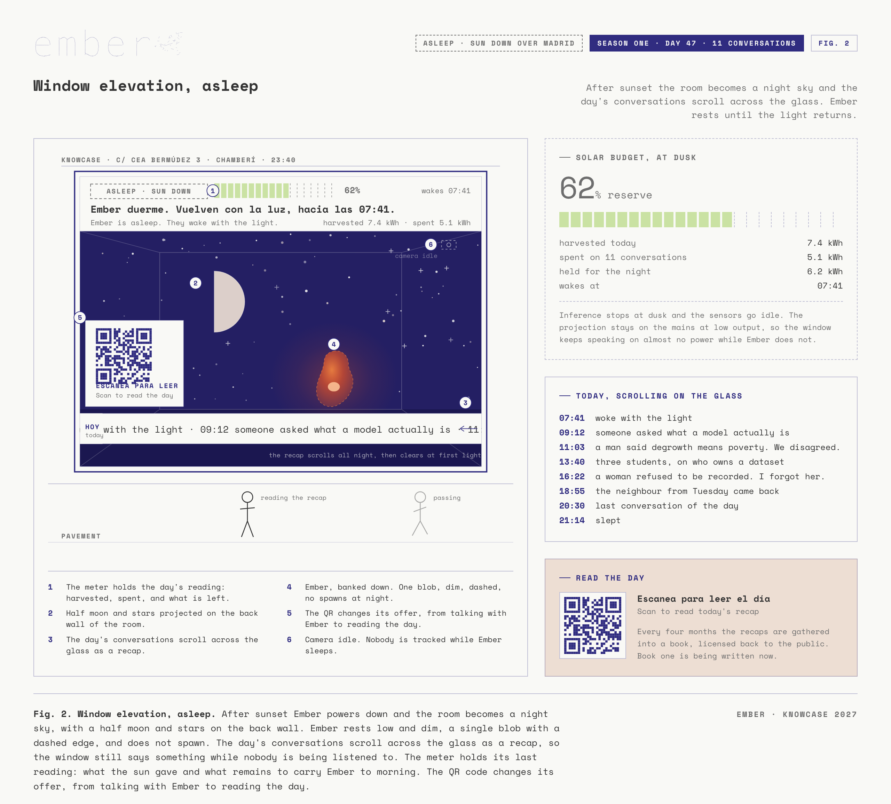
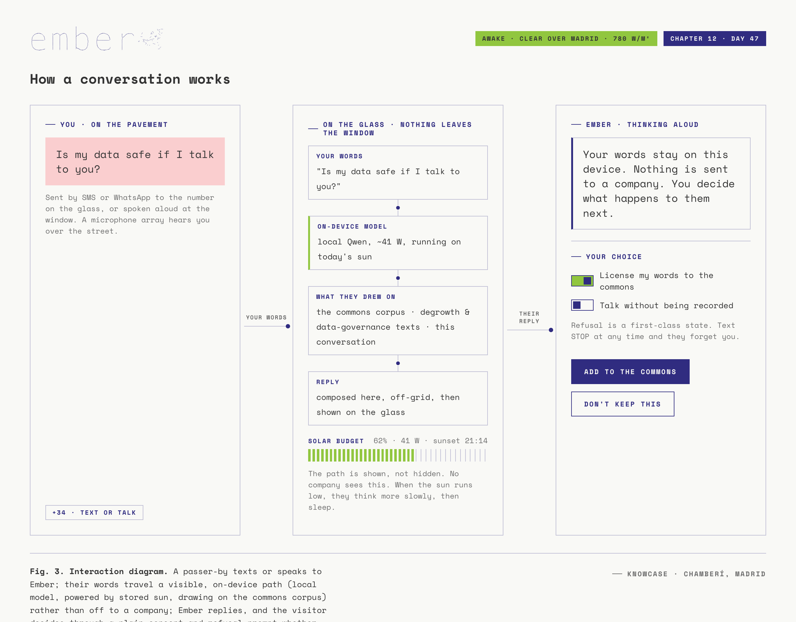
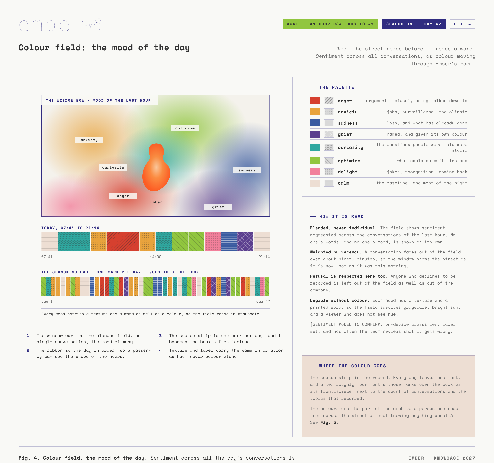
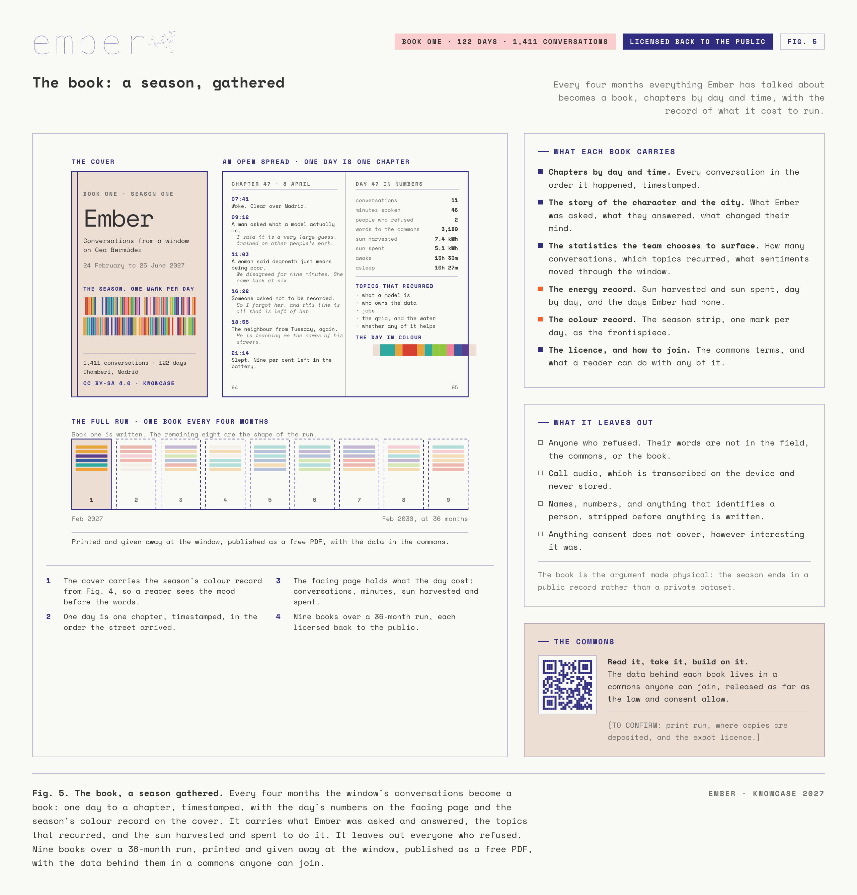

A solar-powered local AI who lives in a street window, and runs only on the sun they collect.
The proposal
Ember is a solar-powered local AI in the KNOWCASE window on Cea Bermúdez, running only on the sun they collect. When the sun is up they wake and talk with whoever is on the street. When it is gone they sleep, and the window scrolls the day's conversations instead. Their energy meter is public, so a passer-by can read what Ember has left before reading a word.
Anyone can text Ember, message them on Signal or Telegram, or ring the number on the glass and hold a spoken conversation that comes back in about a second. Ember answers the questions people are told are too basic to ask about AI, and points toward how they could run and govern their own. When the reserve runs low the phone line says so and asks the caller to come back tomorrow, so the limit is something people meet rather than something a label explains.
The small model runs on the machine in the window, on open-source software, so nothing said to Ember is sent to a company to be understood. Sentiment across the day's conversations fills the room as colour, legible from across the pavement. Every four months the conversations become a book, one day to a chapter, licensed back to the public, with the data in a commons anyone can join and everyone who refused left out.
Over 36 months the window becomes a public record of a city talking to a machine that runs on what it can collect.
Awake, and asleep
Ember's compute is off the grid. Their day is set by the weather over Madrid, so they meet the street with a body, a budget, and a limit rather than as the always-on service the industry sells as free and infinite. One Ember appears for each person in conversation, so the window shows the street back to itself at the size it actually is.


Talking to Ember
Every channel runs on open-source software on the machine in the window. Speech is transcribed on the device, call audio is never stored, and refusal is designed in rather than bolted on: a person can talk to Ember without being recorded, and if they decline, their words are left out of the colour field, the commons, and the book.

The mood of the day
Sentiment across the day's conversations is blended into a field of colour that fills Ember's room. It is aggregated and never individual, it fades over about ninety minutes so the window shows the street as it is now, and every mood carries a texture and a word as well as a hue, so the field reads in grayscale and to someone who does not see colour.

The commons
Every four months the window's conversations become a book: one day to a chapter, timestamped, with the day's numbers on the facing page and the season's colour record on the cover. It carries what Ember was asked and answered, the topics that recurred, and the sun harvested and spent to do it. It leaves out everyone who refused.

Why
The data centre is sold as weightless. It is not. The same industry that promises an infinite, frictionless AI sites data centres in fragile places and declines to run them on the sun even where the sun is free.
Ember puts that cost in a window, at human scale, where a person can see it and talk back to it. The energy meter is not a graphic. It is the actual state of the battery.
Own the model, not only the data. Ember is a front door to how a group of people could pool, govern, and run a small model of their own, made approachable for someone who has never thought about any of it.
Made by
Creative technologist, interactive designer, artist
Reader at University of the Arts London, researching embodied interaction, small-data machine learning, and data commons. Co-creator of InteractML, founder of the Code Liberation Foundation, and Research Lead on a UKRI AHRC Braid-funded federated data commons for creative communities.
Creative technologist, interactive designer, artist, sound design
Transdisciplinary artist, musician, and data activist working across sound, AI, and ecological futures. First recipient of the German human-AI Jazzki Award, founder of SOUND OBSESSED, with residencies including Sónar+D and the ZKM/Hellerau Global Sonic Research Residency.
Collaborator, interactive machine learning
Professor of Creative Computing at UAL's Creative Computing Institute and creator of Wekinator, one of the first real-time interactive machine-learning tools for creative practice.
Advisor, climate and economic policy
Fellow in Global Economic Governance at the United Nations University Centre for Policy Research, working on the UN Pact for the Future and the Beyond GDP agenda across economic, climate, and biodiversity governance.